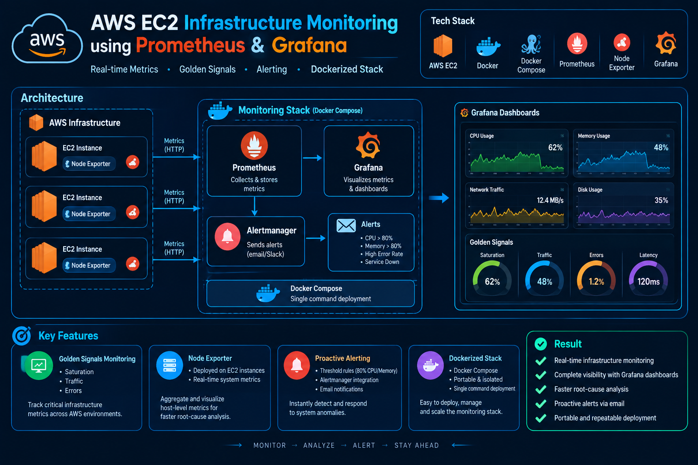

Featured Resume Projects.
Real-world production backend services, automated DevSecOps pipelines, and cloud systems.

DevSecOps CI/CD Pipeline
Designed and automated an end-to-end DevSecOps pipeline using Jenkins triggered via GitHub Webhooks, streamlining build, security testing, and deployment workflows.
- Enforced code quality gates with SonarQube static analysis
- Integrated Trivy for Docker container image vulnerability scanning
- Built multi-stage Docker images with automated deployment to AWS EC2

AWS Infrastructure Automation using Terraform & Ansible
Provisioned modular AWS infrastructure (EC2 instances, IAM roles, Security Groups) as code using Terraform with remote state management for safe, repeatable deployments.
- Declarative Infrastructure as Code (IaC) configuration
- Automated server configuration and web server deployment with Ansible
- Multi-environment rollout across Dev, QA, and Production environments

AWS EC2 Infrastructure Monitoring Platform
Built a containerized observability stack using Docker Compose, Prometheus, Node Exporter, and Grafana to monitor CPU, memory, traffic, and error metrics in real time.
- Proactive threshold alerts configured for 80% resource saturation
- Integrated with Alertmanager and AWS SNS/CloudWatch
- Visual executive Grafana dashboards for server telemetry

TV Repair Coimbatore — Service Lead Marketplace
Live commercial platform built during my Backend Internship at Bloogle. Designed REST APIs to capture, validate, and dynamically match customer leads with verified repair shop owners.
- Built with NestJS, TypeScript, Prisma ORM & PostgreSQL
- Role-Based Access Control (RBAC) with Google OAuth 2.0 & JWT
- Admin verification workflow & subscription-based lead filtering

Automobile Repair Management System
Full-stack Automobile Repair Management System featuring customer service booking, repair job tracking, customer invoice generation, and status updates through an intuitive user interface.
- Interactive client booking and repair job status tracker
- Relational MySQL database schema design with optimized queries
- Responsive front-end built with HTML5, CSS3, and JavaScript